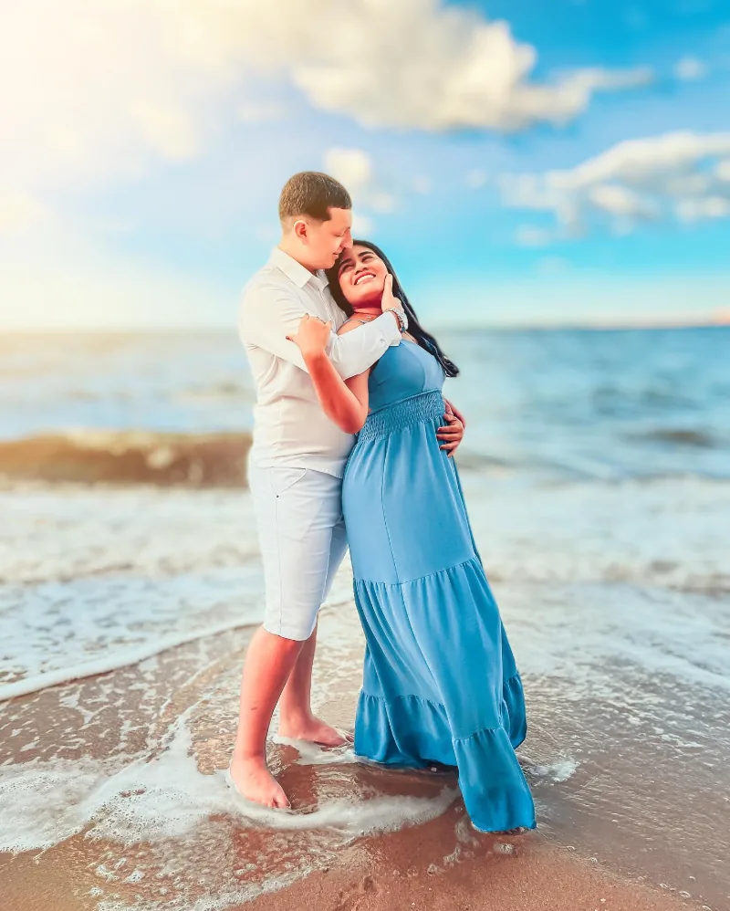
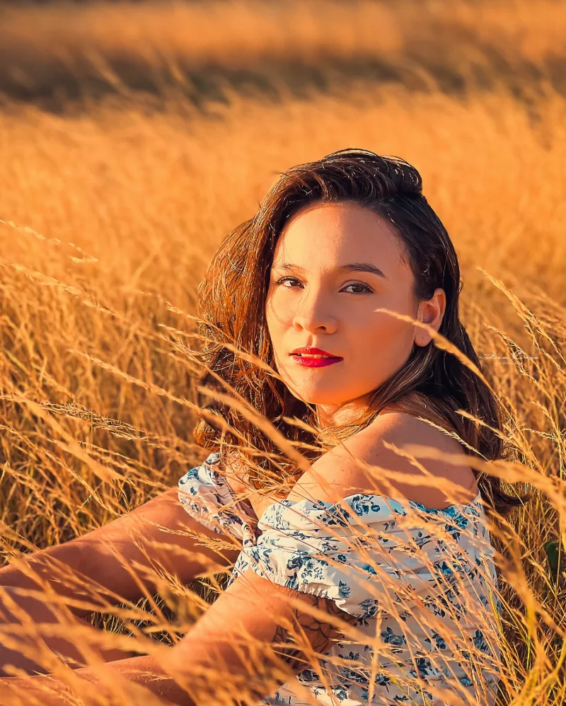
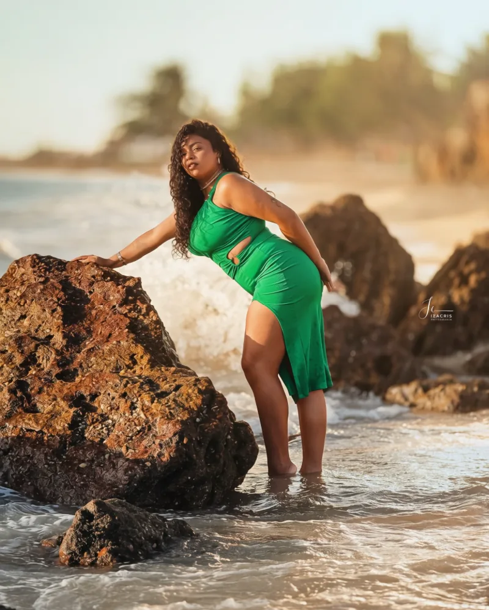
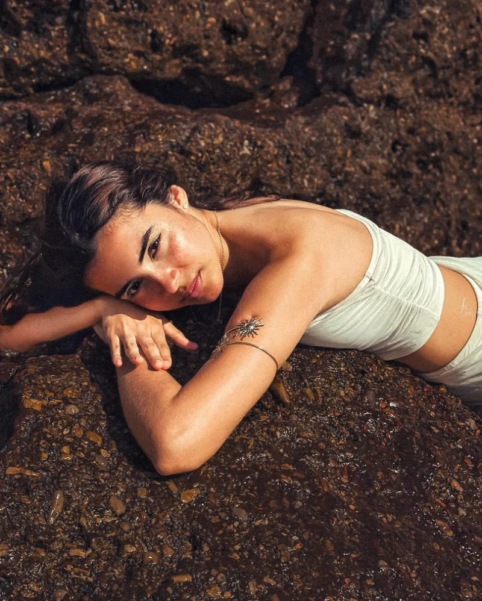
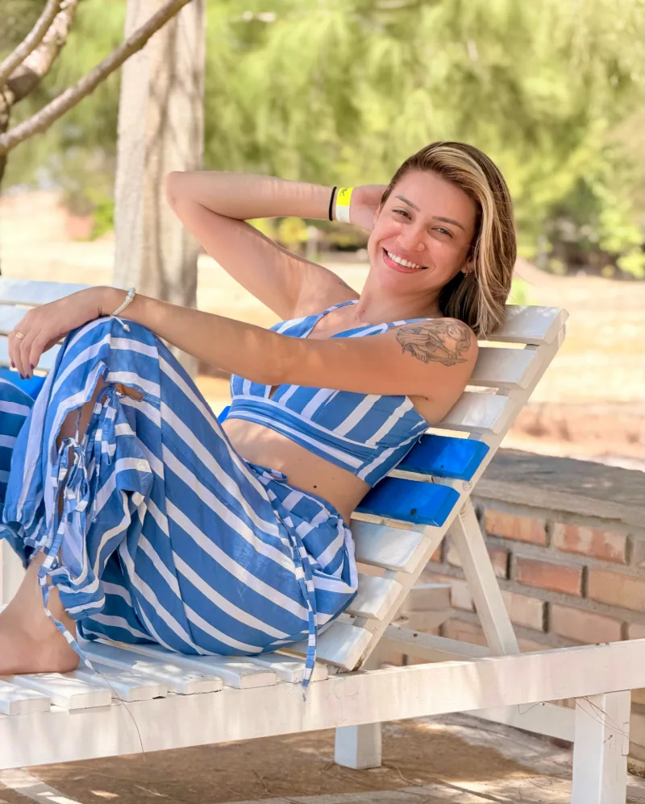

Queen
Pacote com 2 presets.
R$67 Quero o QueenCamocim, Ceará
Sou a Iza Cris, fotógrafa em Camocim. Faço ensaios femininos, de gestante e de casal com direção do começo ao fim. Você não precisa saber posar: eu te guio em tudo.




Quase todo mundo chega travado, achando que não é fotogênico. Aqui você não vai ficar fazendo pose dura. Você vai respirar, rir, sentir o vento, e eu vou te dizendo cada detalhe.
“Eu falei pra ela: aqui você não vai posar. Você vai respirar, rir, sentir o vento.”
Praia, pedras, campo, estúdio. Escolha um tipo de ensaio para ver só ele, ou toque em uma foto para ampliar.
Mais ensaios no Instagram @izacrisfotografia.
Do primeiro “oi” até as fotos prontas nas suas mãos.
Pelo WhatsApp você me conta o tipo de ensaio, a data que prefere e como quer se sentir nas fotos.
Escolhemos juntas o local, o horário e as roupas, pra você chegar tranquila no dia.
Sem pressa e sem pose forçada. Eu te guio em cada foto, do jeito leve que você merece.
Você recebe as fotos tratadas, prontas pra guardar e postar.

Sou fotógrafa há 5 anos e acredito no poder da fotografia para transformar a autoestima e eternizar momentos únicos.
Fotografo em Camocim mulheres, gestantes, casais e famílias. O que mais me emociona é a mensagem que chega depois, de quem chegou tímida e saiu se achando linda.
Obrigada a cada cliente que confia no meu trabalho e me deixa contar um pedacinho da sua história.
Iza Cris
As cores das minhas fotos, prontas pra você aplicar nas suas. Para comprar, é só me chamar no WhatsApp.
Pacote com 2 presets.
R$67 Quero o QueenPacote com 11 presets.
R$97 Quero o EstaçãoFicou alguma pergunta? Me chama no WhatsApp, com calma, que eu te explico tudo.
Vai. A maioria das minhas clientes chega dizendo exatamente isso. Eu te oriento em tudo: expressão, mãos, postura e onde olhar. Você só precisa estar aberta a se divertir.
Em Camocim e arredores: praia, pedras, campo, jardim e fundo de estúdio. Escolhemos juntas o lugar que combina com o seu ensaio.
Feminino, gestante, casal e pré-wedding, família, mãe e filho, aniversário, 15 e 18 anos.
Os valores e as datas livres eu passo pelo WhatsApp, porque mudam conforme o tipo de ensaio. As vagas de cada mês são limitadas, então vale chamar com antecedência.
Me chama no WhatsApp. Se eu demorar pra responder, não é desinteresse, é só correria. Fala comigo com calma.
Chamar no WhatsApp